Preço de out/2025 · confirme
Bife à cavalo
Arroz branco, feijão, bife, ovo e batata frita.
R$ 37,90
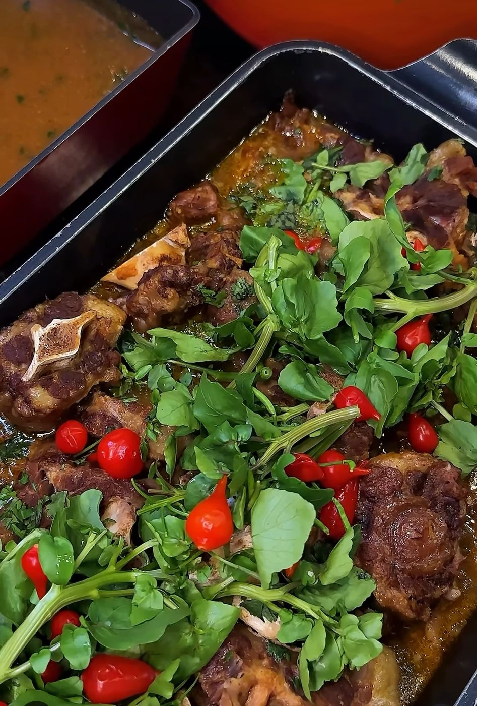
Águas Claras Shopping · Brasília-DF
Comida de vó, feita todo dia.
4,9 ★ no Google com mais de 3.700 avaliações
Estudantes e professores têm 10% de desconto. Confira as regras no balcão.
Aqui o fogão não descansa: o feijão cozinha devagar, o tempero é feito na hora e cada prato sai com o mesmo cuidado de um almoço de domingo na casa da vovó.
Ingredientes frescos, receitas passadas de geração em geração e aquele gostinho que lembra casa. Chegue sem pressa, a mesa está posta.
Tudo começa antes de abrir a porta: feijão no fogo baixo, tempero batido na hora.
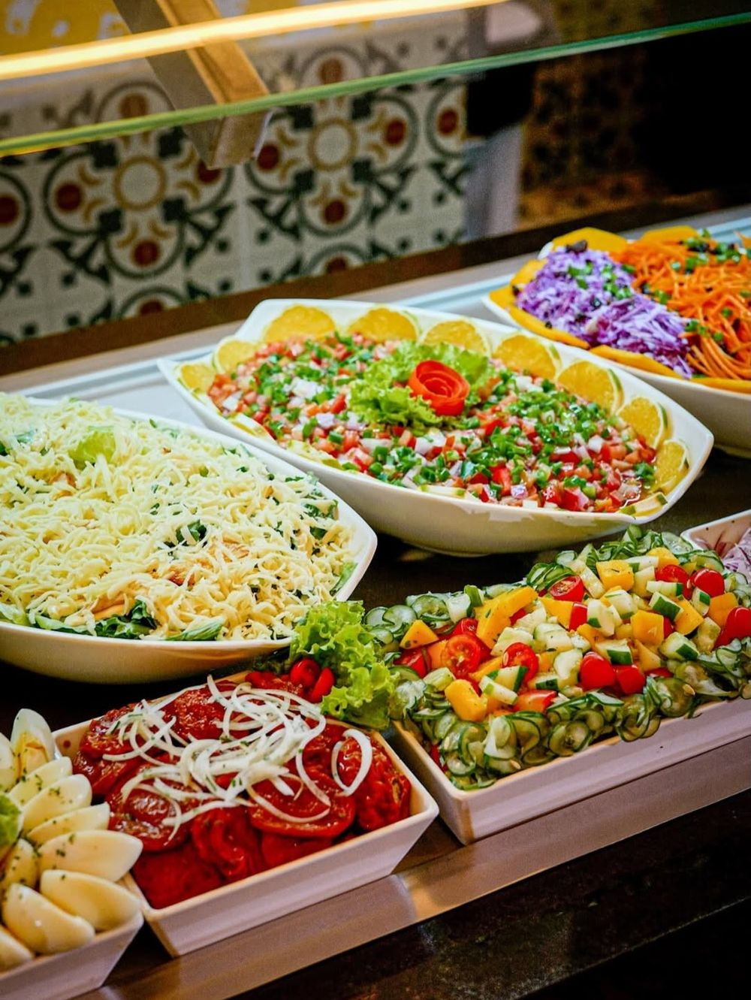
ManhãVerduras lavadas, carnes temperadas e a guarnição do dia preparada com calma.
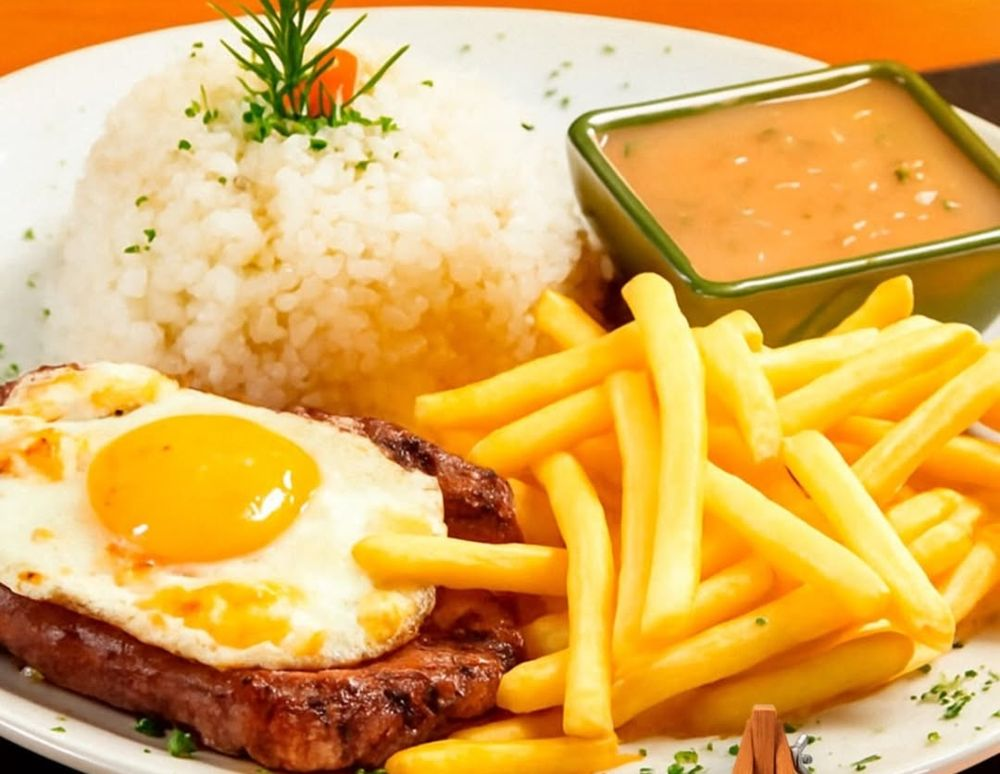
Meio-diaPanelas quentinhas e prato montado como se fosse para a família.
Arroz branco, feijão, bife, ovo e batata frita.
R$ 37,90
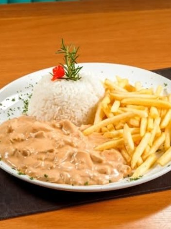
Strogonoff cremoso com arroz branco e batata palha.
Consulte
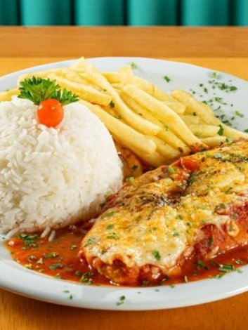
Empanado com molho e queijo gratinado, arroz e batata frita.
Consulte
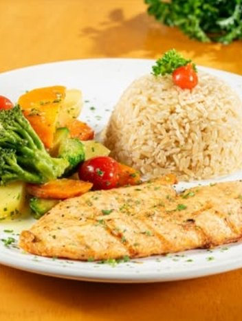
Filé grelhado com arroz integral, brócolis, cenoura e batata.
Consulte
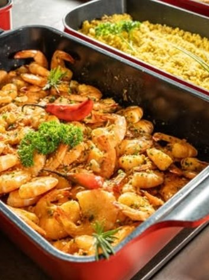
Camarão no alho e pimenta, servido na bandeja do buffet.
Consulte

Arroz com carnes e temperos da casa.
Consulte
Carne macia no tempero da casa, finalizada com agrião e pimenta biquinho.
Consulte
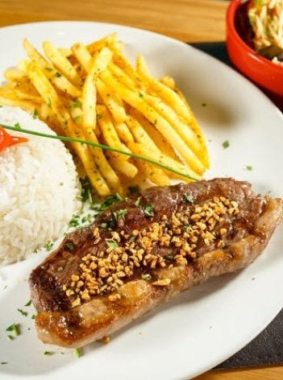
Corte grelhado com alho frito crocante, arroz e batata palha.
Consulte

Medalhão de filé macio com molho da casa.
Consulte
Costela assada lentamente até desmanchar.
Consulte
Saladas, legumes e pratos quentes variados, tudo no balcão.
Consulte o preço por kg
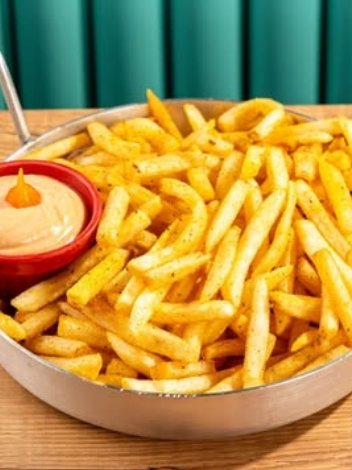
Porção crocante servida com molho da casa.
Consulte
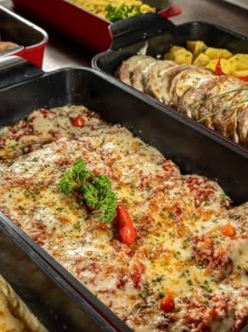
Prato gratinado com queijo, direto da bandeja quente.
Consulte
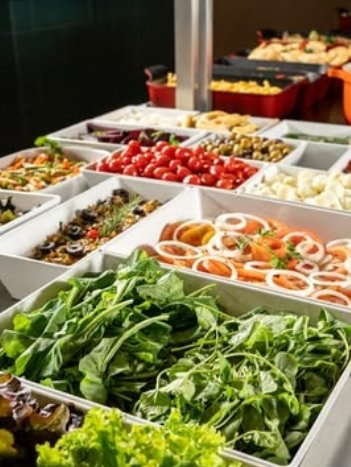
Folhas, legumes e temperos para montar o seu prato.
Consulte
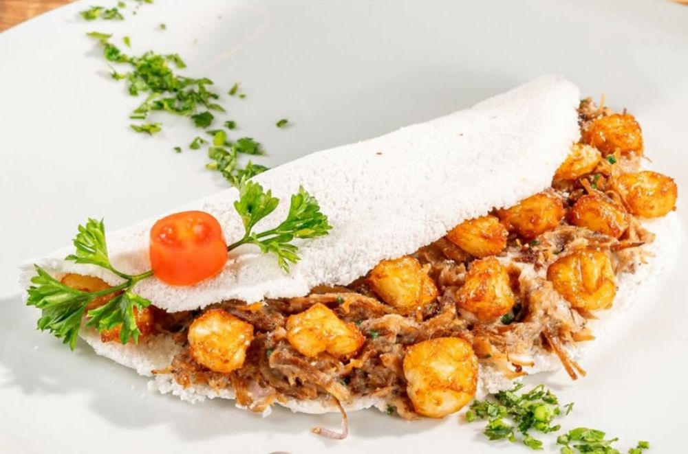
Tapioca com carne desfiada e queijo dourado.
Consulte
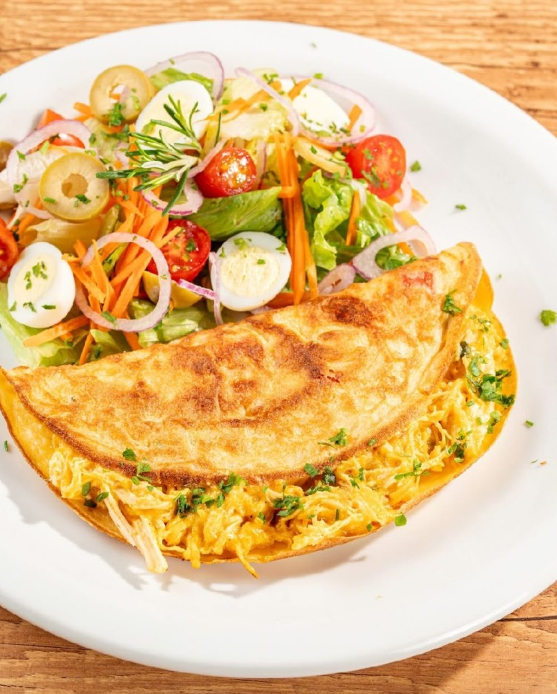
Crepioca de frango desfiado com salada de folhas, tomate e ovo de codorna.
Consulte
Cuscuz recheado com carne seca e queijo, coberto com ovo frito.
Consulte
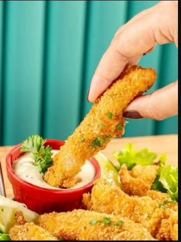
Iscas crocantes servidas com molho para mergulhar.
Consulte

Cocada de forno quentinha, servida com sorvete de creme.
Consulte
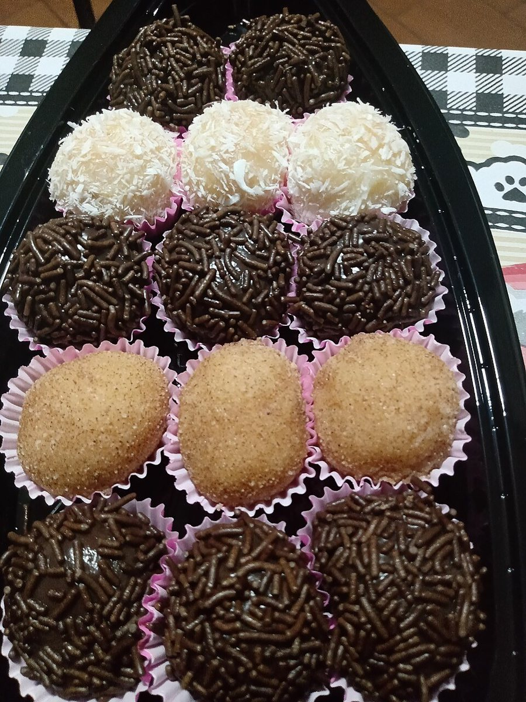
Brigadeiros caseiros de chocolate, coco e outros sabores.
Consulte
Doce caseiro de panela, feito na casa. Pergunte qual é o do dia.
Consulte
Sucos de frutas naturais, geladinhos.
Consulte
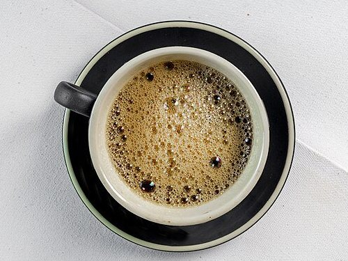
Cafezinho passado na hora, pra fechar a refeição.
Consulte

Refrigerantes, águas e outras bebidas geladas.
Consulte
Cervejas e vinhos para acompanhar a refeição.
Consulte
Mande a mensagem com o seu pedido e a gente responde rapidinho.
Chamar no WhatsAppRetirada e entrega estão na ficha do Google. Consulte área e taxa pelo WhatsApp.
Na praça de alimentação do Águas Claras Shopping, com mesas externas, menu infantil e cadeirões.
Sim, há retirada e entrega. Consulte área e taxa pelo WhatsApp.
Temos buffet a quilo e também pratos à la carte. Escolha como preferir.
Aceitamos reservas. Chame no WhatsApp (61) 99876-9291 para combinar.
Sim, temos menu infantil, cadeirões e acessibilidade.
Consulte as formas de pagamento aceitas no balcão ou pelo WhatsApp.